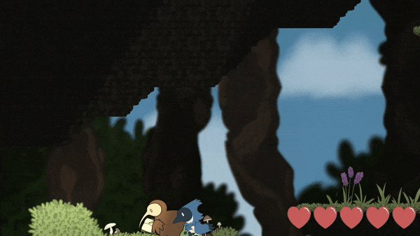
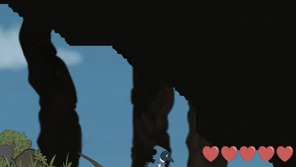

Overview
Corvidae was my entry to the 2021 SFAS competition. The sample project given implimented a basic branching dialogue system that I used
to create a simple metroidvania that featured:
- quests
- combat
- boss battles
- traversal mechanics

Gameplay
The player begins with an opening cutscene that explains the main quest before they are put into a kind of tutorial level that allows the player to attack a single enemy and play with the double jump feature so that they can become familiar with the controls.
From here they arrive in the town and can begin trading or talk to a different character or go straight out into the woods.
In the woods the player can come across bosses that unlock abilities for the player such as dash and wall jump and these allow the player to then reach other areas of the map such as the jungle region.
In order to finish the game the player must defeat 2 bosses with the final boss being dependent on the choice that the player makes.

Accessibility
Corvidae allows the use of both keyboard and mouse, and controller with the menu selection also being supported through the use of the standard movement controls (WASD or analog sticks).
I wanted to make the game as accessible as possible as I could within the time frame and this included the different audio sliders for both ambient and SFX as well as the choice of either keyboard and mouse or controller.
I tried to include both visual and audio indicators when something happened on screen such as getting hit incorporated a camera shake, a player animation and a sound effect.